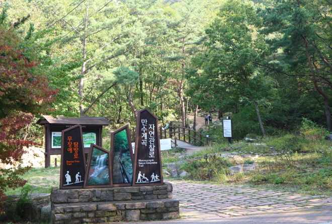
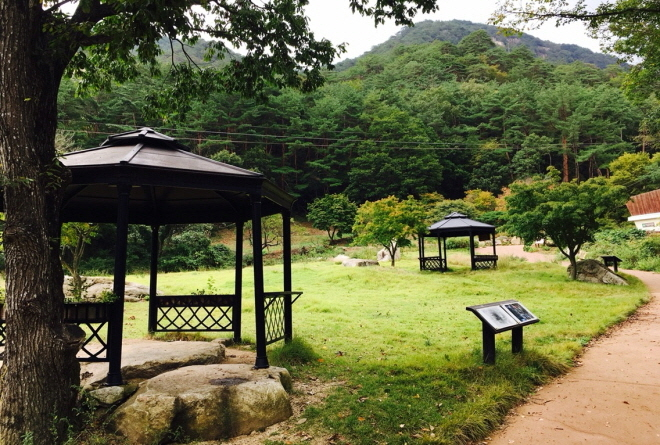
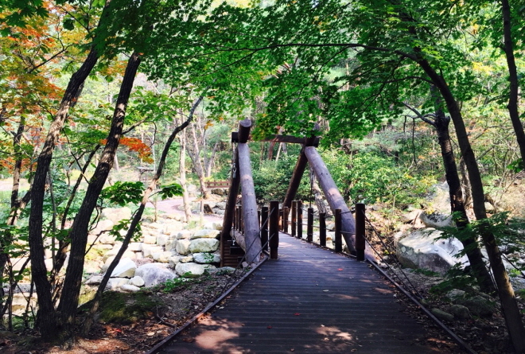
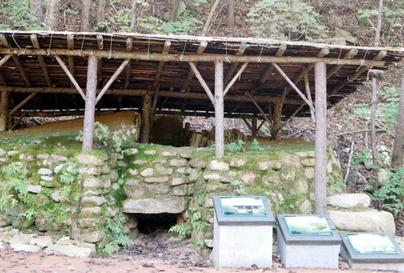
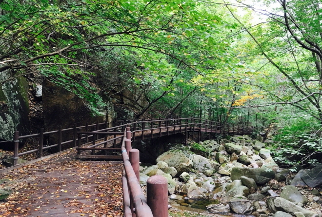

만수무장애탐방로
 소개
소개- 장애인, 임산부도 장애물 없이 탐방이 가능한 탐방로
- 거리(시간)
- 800m/순환(30분 소요)
- 위치
- 만수봉 탐방로 입구
- 특징
- 2013년에 조성되었으며 노면이 황토포장, 데크로 되어 있어 휠체어, 유모차 운영이 가능
- 시설
- 계곡토론장, 점자해설판, 계곡물체험장, 숯 가마터 등
- 
만수 무장애탐방로 입구

무장애 탐방로 황토포장
- 
미래세대 체험장

계곡토론장
- 
무장애탐방로 순환다리

계곡물체험장
- 
숯가마터
- 
계곡변 데크길